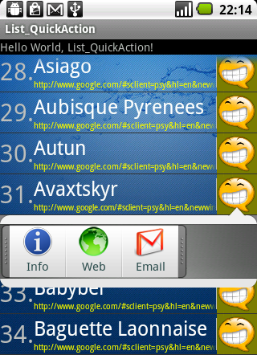

仿通讯录ListView小例子
写这例子的初衷是想模仿通讯录列表，实现了一些效果，也没法做到100%相像，自己也认为还有一些不足(存在些内存上的浪费)。
这个阶段先这样了，代码量比较大，就不贴代码了，只上效果图。

1.实现根据字母进行分类.
2.实现快速滑动及修改快速滑动条的图标.
3.实现快速滑动时的字母提示.
4.实现快捷操作框及其的动画显示/隐藏，上箭头与下箭头的选择性显示及位置匹配.
5.顺便做了个自定义Dialog和完整的发送邮件的实现(主送、抄送、密送、附件、标题、正文).
部分实现细节介绍：
1.快速滑动时的字母提示框
该显示组件为TextView，实例索引名为txtOverlay，执行WindowManager.addView(txtOverlay，layoutParams)后添加于WindowManager上.通过设置ListView.OnScrollListener监听到滚动时则将txtOverlay设置可见性为View.VISIBLE，当滚动结束时可见性调为View.INVISIBLE.
为了提升用户体验，避免在短时间内，用户再次拖动时字母提示框又执行显示和隐藏命令，将隐藏的操作设置在DisapearThread线程实例中，通过handler.postDelayed(disapearThread， 1500)延时1.5秒后再执行字母提示框的隐藏.
2.快速滚动图标的修改
Android Api并未公开修改图标的接口，本处通过调用Java的反射机制修改了快速滚动的图标.替换代码见MainAct类中的changeFastScrollerDrawable().
补充：Android对ListView设置了优化，对于少于4页内容的List即使设置了fastScrollEnabled=true也不会显示FastScroller.
参考资料查看：<Android_Source>\frameworks\base\core\java\android\widget\FastScroller.java：其中常量MIN_PAGES及其相关.
3.获取List中“咧牙”ImageView在屏幕中的绝对位置
代码如下：
anchor为“咧牙”ImageView.
int[] location = new int[2]；anchor.getLocationOnScreen(location)；
Rect anchorRect = new Rect(location[0]， location[1]， location[0] + anchor.getWidth()，
location[1] + anchor.getHeight())；
这个步骤也是为上箭头与下箭头的自动选择做好铺垫.4.为快捷按钮组成的LinearLayout设置反弹动画 设置LinearLayout沿直线轨迹从从屏幕右边滑动到左边这个部分的动画定义文件是res/anim/anim_actionslayout.xml，代码如下：
<？xml version="1.0" encoding="UTF-8"？><！-- 本文件指定了actionsLayout的出现动画. -->
<！-- translate定义了垂直或水平方向或两者混合的一种运动. -->
<！-- formXDelta：赋值为浮点数或百分比.百分号后面'p'表示相对于父控件的相应位置.当只有百分号时表示相对于控件本身的位置. -->
<！-- 查看@android：integer/config_longAnimTime的具体值可于<SDK_PATH>\platforms\<android-level>\data\res\values\config.xml -->
<translate xmlns：android="http：//schemas.android.com/apk/res/android
android：fromXDelta="100%p
android：toXDelta="0
android：duration="@android：integer/config_longAnimTime
>
</translate>
需要反弹的效果还得对Animation设定Interpolator(插值器)，插值器的设定需要一些数学基础了，得找到合适的函数对动画速率进行修正.本例中使用的插值器代码如下：
import android.util.Log;import android.view.animation.Interpolator;
public class CustomInterpolator implements Interpolator {
/**
* @param input
* A value between 0 and 1.0 indicating our current point in the
* animation where 0 represents the start and 1.0 represents the
* end
* @return Returns The interpolation value. This value can be more than 1.0
* for Interpolators which overshoot their targets, or less than 0
* for Interpolators that undershoot their targets.
*/
public float getInterpolation(float input) {
Log.d("ANDROID_LAB", "input=" + input);
// 设定动画的加速度变化值.此例的效果是使用actionsLayout超过目标旋转区后再反弹回来.
// 插值计算公式： 1.2-((x*1.55f)-1.1)^2
// 画出函数图的话即可观察出动画执行过程中越过目标区再反弹的详细过程.
// x ：0 <= v <= 1.0
// (x*1.55f) ：0 <= v <= 1.55
// ((x*1.55f)-1.1) ：-1.1 <= v <= 0.45
// ((x*1.55f)-1.1)^2 ：0<= v <= 1.21
// 1.2-((x*1.55f)-1.1)^2 ：-0.1 <= v <= 1.2
final float inner = (input * 1.55f) - 1.1f;
// 如果返回值为常量1的话,则相当于没有动画效果.
return 1.2f - inner * inner;
}
}